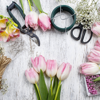
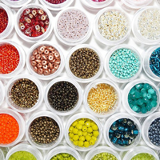

Делаем своими руками из любых материалов
Если тебе нравится рукоделие, ты любишь мягкие игрушки ручной работы и различные милые вещи, то наверняка тебе понравятся и куклы Тильды. Сегодня мы расскажем об удивительных куклах тильда ручной работы, как сшить куклу тильду и еще много интересного о других очаровательных игрушках.
Куклы и игрушки
 Милые поделки, созданные своими руками – это хобби для многих. Handmade – это выражение неординарных идей и таланта автора в материальном виде. Под категорию handmade попадает множество самых разнообразных техник. Здесь присутствует квиллинг, вышивка, декупаж, вязание, ручная роспись по ткани, а также многое другое. Также с помощью техник handmade можно украсить свой дом или сад, разнообразить гардероб украшениями, вдохнуть новую жизнь в старую мебель. Огромное поле для фантазии дает создание альбома собственных открыток. Отличным сувениром из отпуска станет рамочка для фотографий из ракушек или разукрашенные акриловыми красками морские камушки. Используя разные техники можно создать чудесные подарки, которые будут радовать близких и родных людей.
Милые поделки, созданные своими руками – это хобби для многих. Handmade – это выражение неординарных идей и таланта автора в материальном виде. Под категорию handmade попадает множество самых разнообразных техник. Здесь присутствует квиллинг, вышивка, декупаж, вязание, ручная роспись по ткани, а также многое другое. Также с помощью техник handmade можно украсить свой дом или сад, разнообразить гардероб украшениями, вдохнуть новую жизнь в старую мебель. Огромное поле для фантазии дает создание альбома собственных открыток. Отличным сувениром из отпуска станет рамочка для фотографий из ракушек или разукрашенные акриловыми красками морские камушки. Используя разные техники можно создать чудесные подарки, которые будут радовать близких и родных людей.
Валяние
 Валяние из шерсти. Русские валенки пришли к нам как раз оттуда, из глубины веков. Только в наши дни из шерсти валяют не только обувь, но и массу других предметов.
Валяние из шерсти. Русские валенки пришли к нам как раз оттуда, из глубины веков. Только в наши дни из шерсти валяют не только обувь, но и массу других предметов.
В основе техники фелтинга лежит способность натуральной шерсти сваливаться и становиться войлоком. Бывает два способа валяния – мокрое и сухое. При мокром валянии получаются плоские изделия, например, гобелены, ковры и декоративные наволочки на подушки.
Сухое валяние позволяет получить объемные формы, например, декоративные вазы или салфетницы. Вообще фелтинг – занятие чрезвычайно приятное и умиротворяющее. Войлок – очень послушный материал, работать с ним не сложно. Рекомендуется беременным женщинам и детям. Заодно и детскую комнату украсите симпатичными и безопасными вещичками!
Купить материал можно в любом швейном магазине или даже на сельхозрынке. Конечно, самая лучшая шерсть — это золотое руно. Но его еще в древние века выкрал из Колхиды один герой по имени Ясон…
Флористика
 Под флористикой понимают искусство составления букетов. Это один из видов дизайна, результатом которого являются цветочные букеты, панно или коллажи. Такая работа имеет как техническую, так и творческую сторону. Целью же флористики выступает оформление какого-либо праздника или события, выражение их темы или идеи за счет природных композиций из цветов и листьев. Начинающим дизайнерам в этой области стоит обратить внимание на несложные коллажи или букеты. В результате такое хобби может стать настоящей профессией.
Бисероплетение
 Человечество знакомо с бисероплетением с древних времен. В последнее время этот вид рукоделия занял определенное место в современной моде. Богатейшая цветовая гамма чешского бисера, неограниченные возможности моделирования изделий из бусинок, большой ассортимент различных украшений могут осуществить любую мечту самой капризной модницы. Колье и серьги, пояски и брошки, шапочки и браслеты, заколки и сумочки в сочетании с натуральными камнями, жемчугом и янтарем придают внешнему виду оригинальность и неповторимость.